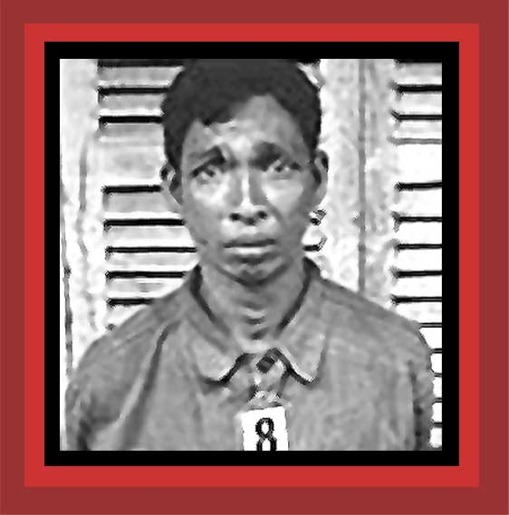

| Here is another Cambodian unknown victim of the Khmer Rouge's Tuol Sleng extermination center. For documentation on the Khmer Rouge years, see Chapter 6 of Saving Lives, Enriching Life, Death By Government, and Statistics of Democide. Source: Yale Cambodian Genocide Program. |